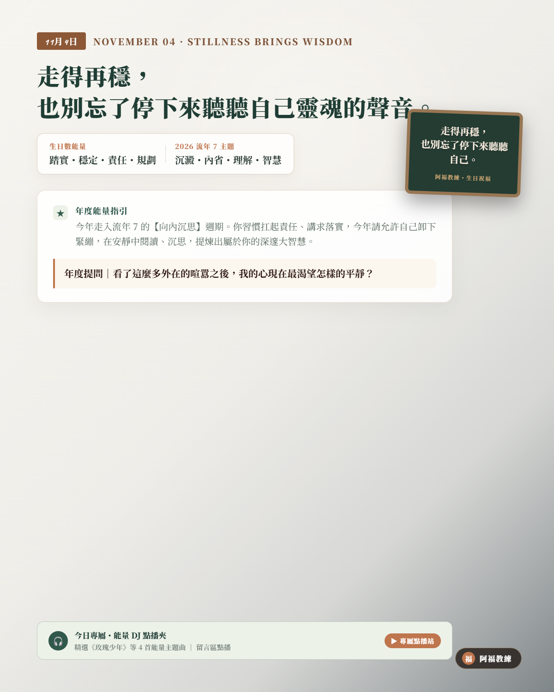

NOVEMBER 04 · STILLNESS BRINGS WISDOM
11/04 壽星
生日快樂
「走得再穩，也別忘了停下來聽聽自己靈魂的聲音。」
生日數 4（踏實・穩定・責任・規劃）
2026 流年 7（沉澱・內省・理解・智慧）
生日數能量：踏實・穩定・責任・規劃
流年 7 主題：沉澱・內省・理解・智慧
A YEAR OF SPECIAL MASTERY
卸下緊繃與標準答案，在安靜中提煉人生大智慧
今年走入流年 7 的【向內沉思】週期。你習慣凡事講求秩序、把責任扛在肩上，但今年宇宙要你學會按下暫停鍵。不要害怕停下腳步會影響進度，給自己留出獨處、閱讀與深思的留白時間。看懂事情背後的本質邏輯，與內心深處的自己和解。當你的內在澄澈如鏡，你的決策與眼光將擁有無可撼動的高維智慧。
年度提問｜「看了這麼多外在的喧囂之後，我的心現在最渴望怎樣的平靜？」
YOUR ENERGY DJ · 4 號人的流年 7 能量點播站
當務實規律的 4 號人，走進深邃內省的流年 7
身為天生求穩、講求安全感與規劃的 4 號人，你習慣用不斷的產出與執行來證明自己；然而今年走入「流年 7」的哲思週期，宇宙給你的考題是「面對未知與安靜」。當凡事需要標準答案的你，遇上面對形而上反思的年份，容易陷入過度分析、精神內耗的緊繃。今天 DJ 特別為 4 號人的你精選流年 7 沉澱歌單——撫平你的焦慮、在安靜中定錨，提煉屬於你的大智大勇！
LIFE NUMBER 7 · CLASSROOM PLAYLIST
7 號人課堂激勵與歡唱歌單（給 4 號人的流年 7 智慧歌單）
這份歌單來自阿福教練生命靈數課堂中，專為「深度反思、洞察真理與心靈沉澱」所調配的經典曲目。習慣按部就班的 4 號壽星，在面對流年 7 的內省週期時，聽這 8 首歌，就像走進靜謐的大理石圖書館——卸下緊繃盔甲，在寧靜中提煉出屬於你的真智慧！
- 01達爾文蔡健雅｜深度開場・以成長與懂得的角度引導內省，安靜看見自己的蛻變（YouTube 搜尋）
- 02山丘李宗盛｜人生洞見・討論經驗與深度的生命視角，放下刻板的標準答案（YouTube 搜尋）
- 03旅行的意義陳綺貞｜提問練習・用探索與留白帶出「我真正想追尋的是什麼」之思考（YouTube 搜尋）
- 04逆光孫燕姿｜突破盲點・鼓勵在不確定中持續向內尋找真實信念與光芒（YouTube 搜尋）
- 05如煙五月天｜回顧反思・回顧走過的路，整理真正重視的生命核心原則（YouTube 搜尋）
- 06無眠蘇打綠｜沉澱轉場・內省靜謐氛圍，適合安靜整理思緒、排解緊繃壓力（YouTube 搜尋）
- 07大海張雨生｜情感深度・提醒理性也能溫柔接納情緒，讓思考更完整宏大（YouTube 搜尋）
- 08聽媽媽的話周杰倫｜價值收束・從深奧哲思回歸樸實生活的溫暖原則，輕鬆收尾（YouTube 搜尋）
歌單依《生命靈數7號人_激勵九首與歡唱點播歌單》整理。點播連結均為 YouTube 官方影音搜尋結果；播放時請依授課場地與著作權規範使用。
願你步履從容，內心永遠保有一方清澈澄明的智慧湖泊。
👉 11/04 壽星快來留言【🌲】！為新的一歲許下最棒的願望！
#11月4日生日快樂 #生命靈數 #生日數4 #流年7 #阿福教練